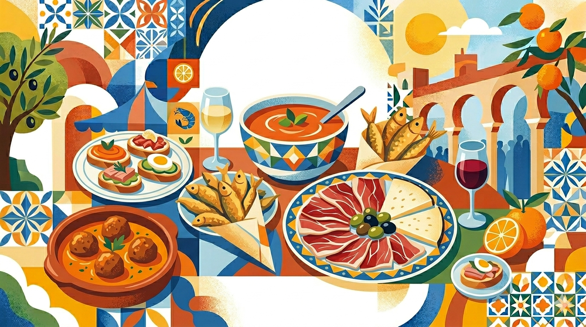

El Ayuntamiento de nuestra localidad quiere promocionar la dieta mediterránea, y sobre todo, dar valor a los platos típicos que tiene cada una de las provincias de Andalucía.
A partir de esa idea, nuestra profesora de Matemáticas ha pensado que nosotros podemos realizar un Mercado gastronómico. Es muy interesante porque así aprenderemos cuál es el origen de platos típicos de nuestro día a día, y también como calcular los ingredientes que necesitaré si un día tengo muchos invitados en casa.
1. Objetivos
Al final de esta situación de aprendizaje serás capaz de:
-
Competencia 2 - Analizar las soluciones de un problema usando diferentes técnicas y herramientas, evaluando las repsuestas obtenidas, para verificar su validez e idoneidad desde un punto de vista matemático y su repercusión global.
-
Competencia 3 - Formular y comprobar conjeturas sencillas o plantear problemas de forma autónoma, reconociendo el valor del razonamiento y la argumentación, para generar nuevo conocimiento.
-
Competencia 6 - Identificar las matemáticas implicadas en otras materias y situaciones reales susceptibles de ser abordadas en términos matemáticos, interrelacionando conceptos y procedimientos, para aplicarlos en situaciones diversas.
-
Competencia 7 – Representar, de forma individual y colectiva, conceptos, procedimientos, información y resultados matemáticos, usando diferentes tecnologías, para visibilizar ideas y estructurar procesos matemáticos.
-
Competencia 10 – Desarrollar destrezas sociales reconociendo y respetando las emociones y experiencias de los demás, participando activa y reflexivamente en proyectos en equipos heterogéneos con roles asignados, para construir una identidad positiva como estudiante de matemáticas, fomentar el bienestar personal y grupal y crear relaciones saludables.
2. Línea temporal